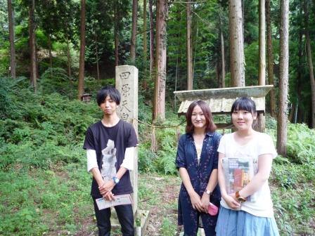

【京都産業大学学生による宇治田原町でのフィールドワーク】
※本取組に関し、京都産業大学は、経済産業省主催「社会人基礎力育成グランプリ2010」決勝大会（3月
5日、東京・よみうりホール）において、全国５３大学の中から「準大賞」を受賞されました。
→ 経済産業省ホームページの関連記事へ
連携主体
自治体名：京都府山城広域振興局（商工労働観光室）
大 学
名：京都産業大学（文化学部 小林一彦教授のゼミ学生）
事業概要
ＪＲ奈良線沿線の万葉集ゆかりの地（万葉歌碑史跡）を巡るとともに、お茶の体験（茶香服等）ができる観光キャンペーンを企画・実施するに当たり、学生の目線から万葉集をベースとした奈良とのつながりや観光資源を再発見し、山城地域の魅力を発信しようとするものです。
連携のきっかけ・経過
山城広域振興局では、平城遷都1300年祭（平成22年）を契機として、万葉集をクローズアップした観光キャンペーンを宇治から奈良に至る山城地域（ＪＲ奈良線沿線）で実施できないか、特に、大学生の目線から地域の資源を発掘して事業を進められないか検討してきました。
そうした中、京都府の「大学・地域連携推進会議」の取組を通じて、京都産業大学文化学部
小林一彦教授にご相談する機会を得て、小林ゼミの学生（6名）が本事業の企画に参加してくれることになりました。
進捗状況・成果
○まず、小林ゼミの学生たちがＪＲ奈良線沿線で詠まれた万葉集の歌のピックアップ作業を進め、これを元に学生たちと山城広域振興局職員が協働して、歌の詠まれた場所や歌碑の有無について現地調査を行うとともに、歌の歴史的背景も調べた上で、キャンペーン実施のための基礎資料を取りまとめました。
○この資料をもとに、万葉集をきっかけにしてＪＲ奈良線沿線地域に来てみたい、魅力があると感じてもらえるようなＰＲ方法や企画に知恵を絞り、学生との協働によりリーフレット【ＪＲ奈良線沿線「お茶と万葉の旅」】を作成しました。そして、このリーフレットをＪＲ主要駅に配架の上、平成21年10月上旬～11月にかけて観光キャンペーンを実施しました。
○参加した学生たちは貴重な夏休みの時間を返上して、この企画に取り組んでくれました。学生たちの意欲的な取組により、万葉歌碑の発見や歌の解説、またリーフレットの企画など、職員だけでは発想できないようなアイディアが出され、地域の資源を再発見・再発信することができたのではないかと感じています。
今後の展開予定
今後も、平城遷都1300年祭が展開される中で、機会があれば大学と連携し、万葉集をテーマとした山城地域全体の観光振興も検討したいと考えています。